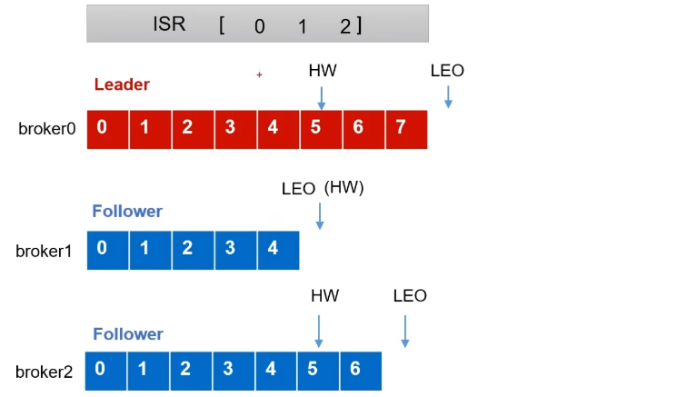
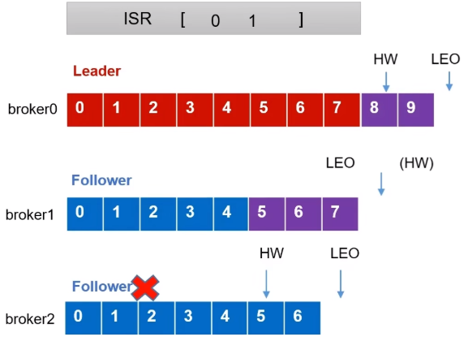
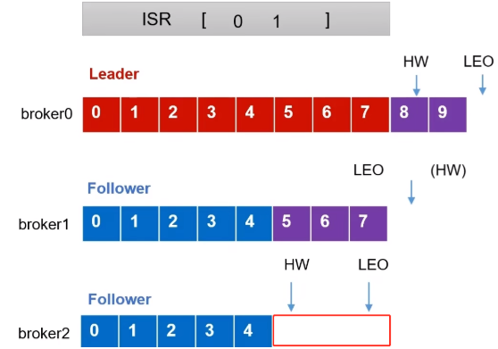
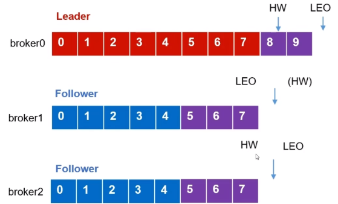
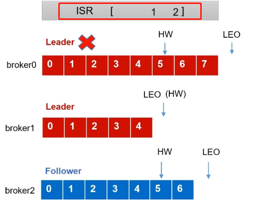
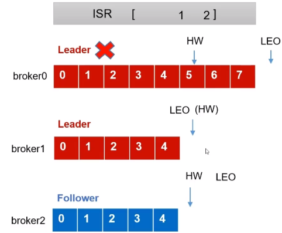
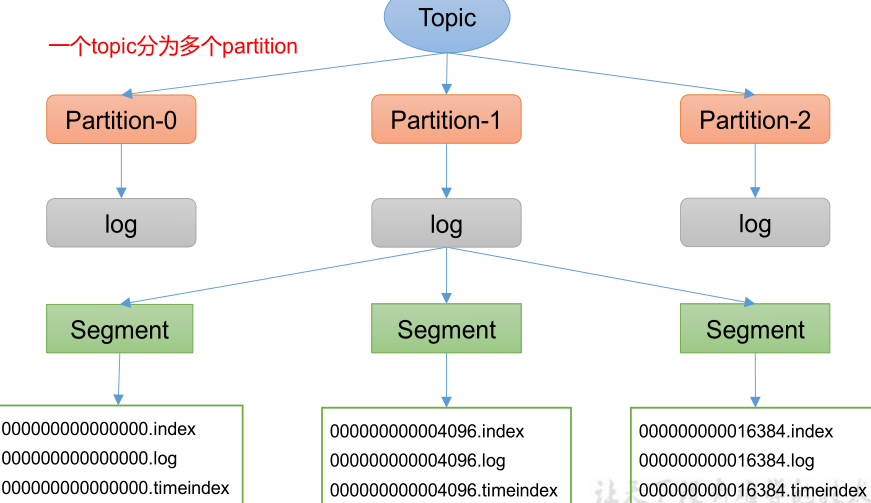
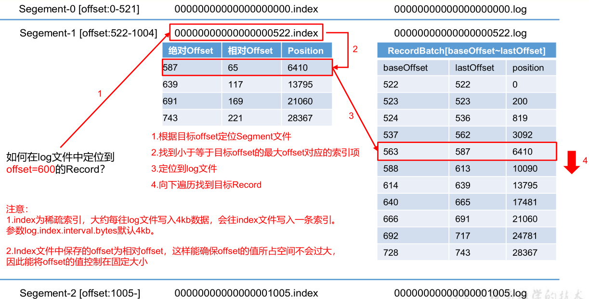
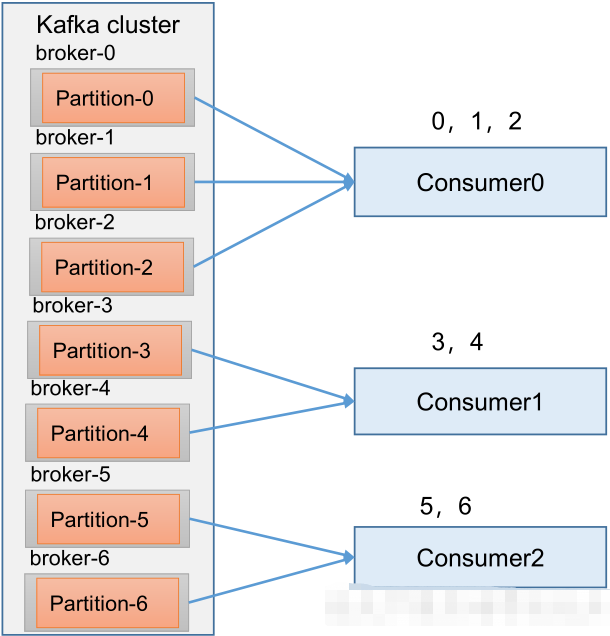
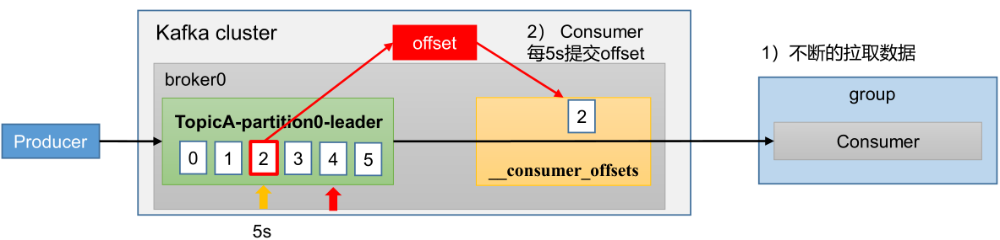

Kafka详解
Kafka
简介
Kafka最初是由Linkedin公司开发的，是一个分布式的、可扩展的、容错的、支持分区的（Partition）、多副本的（replica）、基于Zookeeper框架的发布-订阅消息系统，Kafka适合离线和在线消息消费。它是分布式应用系统中的重要组件之一，也被广泛应用于大数据处理。Kafka是用Scala语言开发，它的Java版本称为Jafka。Linkedin于2010年将该系统贡献给了Apache基金会并成为顶级开源项目之一。

基本概念
定义
- Kafka传统定义：Kafka是一个分布式的基于发布/订阅模式的消息队列（Message Queue），主要应用于大数据实时处理领域。使用Scala语言编写，是Apache的顶级项目。
发布/订阅：消息的发布者不会将消息直接发送给特定的订阅者，而是将发布的消息分为不同的类别，订阅者只接收感兴趣的信息。
- Kafka最新定义：Kafka是一个开源的分布式事件流平台（Event Streaming Platform），主要应用于高性能数据管道、流分析、数据集成和关键任务应用。
消息队列
传统消息队列的应用场景
传统的消息队列的主要应用场景包括:缓冲/消峰、解耦和异步通信。
缓冲/消峰：有助于控制和优化数据流经过系统的速度，解决生产消息和消费消息的处理速度不一致的情况。

解耦：允许你独立的扩展或修改两边的处理过程，只要确保它们遵守同样的接口约束。

异步通信：允许用户把一个消息放入队列，但并不立即处理它，然后在需要的时候再去处理它们。

两种模式
点对点模式
消费者主动拉取数据，消息收到之后清除消息。

发布-订阅模式
- 可以有多个topic主题
- 消费者消费数据之后，不删除数据
- 每个消费者相互独立，都可以消费到数据

基础架构

- Producer：消息生产者，就是向Kafka broker发消息的客户端。
- Consumer：消息消费者，向Kafka broker 获取消息的客户端。
- Consumer Group（CG）：消费者组，由多个consumer组成。消费者组内每个消费者负责消费不同分区的数据，一个分区只能由一个组内消费者消费；消费者组之间互不影响，所有的消费者都属于某个消费者组，即消费者组是逻辑上的一个订阅者。
- Broker：一台Kafka服务器就是一个broker。一个集群由多个broker组成。一个broker可以容纳多个topic。
- Topic：可以理解为一个队列，生产者和消费者面向的都是一个topic。
- Partition：为了实现扩展性，一个非常大的topic可以分布到多个broker（即服务器）上，一个topic可以分为多个partition，每个partition是一个有序的队列。
- Replica：副本。一个 topic 的每个分区都有若干个副本，一个 Leader 和若干个 Follower。
- Leader：每个分区多个副本的“主”，生产者发送数据的对象，以及消费者消费数据的对象都是Leader。
- Follower：每个分区多个副本中的“从”，实时从Leader中同步数据，保持和Leader数据的同步。Leader发生故障时，某个Follower会成为新的Leader。
生产者
消息发送流程
在消息发送的过程中，涉及到了两个线程——main线程和Sender线程。在main线程中创建了一个双端队列RecordAccumulator（默认32m）。main线程将消息发送给RecordAccumulator，Sender线程不断从RecordAccumulator中拉取消息发送到Kafka Broker。

main线程初始化：

sender线程初始化：

main线程发送数据到缓冲区：

sender线程发送数据：

参数列表
| 参数 | 描述 |
|---|---|
| bootstrap.servers | 生产者连接集群所需的broker地址清单。例如kafka1:9092,kafka2:9092,kafka3:9092，可以设置1个或者多个，中间用逗号隔开。注意这里并非需要所有的broker地址，因为生产者从给定的broker里查找到其他broker信息。 |
| key.serializer和value.serializer | 指定发送消息的key和value的序列化类型。一定要写全类名。 |
| buffer.memory | RecordAccumulator缓冲区总大小，默认32m。 |
| batch.size | 缓冲区一批数据最大值，默认16k。适当增加该值，可以提高吞吐量，但是如果该值设置太大，会导致数据传输延迟增加。 |
| linger.ms | 如果数据迟迟未达到batch.size，sender等待linger.time之后就会发送数据。单位ms，默认值是0ms，表示没有延迟。生产环境建议该值大小为5-100ms之间。 |
| acks | 0：生产者发送过来的数据，不需要等数据落盘应答。 1：生产者发送过来的数据，Leader收到数据后应答。 -1（all）：生产者发送过来的数据，Leader+和isr队列里面的所有节点收齐数据后应答。默认值是-1，-1和all是等价的。 |
| max.in.flight.requests.per.connection | 允许最多没有返回ack的次数，默认为5，开启幂等性要保证该值是 1-5的数字。 |
| retries | 当消息发送出现错误的时候，系统会重发消息。retries表示重试次数。默认是int最大值，2147483647。 如果设置了重试，还想保证消息的有序性，需要设置MAX_IN_FLIGHT_REQUESTS_PER_CONNECTION=1，否则在重试此失败消息的时候，其他的消息可能发送成功了。 |
| retry.backoff.ms | 两次重试之间的时间间隔，默认是100ms。 |
| enable.idempotence | 是否开启幂等性，默认true，开启幂等性。 |
| compression.type | 生产者发送的所有数据的压缩方式。默认是none，也就是不压缩。 支持压缩类型：none、gzip、snappy、lz4和zstd。 |
分区
分区好处
- 便于合理使用存储资源，每个Partition在一个Broker上存储，可以把海量的数据按照分区切割成一块一块数据存储在多台Broker上。合理控制分区的任务，可以实现负载均衡的效果。
- 提高并行度，生产者可以以分区为单位发送数据；消费者可以以分区为单位进行消费数据。

分区策略
- 指明partition的情况下，直接将指明的值作为partition值；例如partition=0，所有数据写入分区0。
- 没有指明partition值但有key的情况下，将key的hash值与topic的partition数进行取余得到partition值；例如：key1的hash值=5，key2的hash值=6，topic的partition数=2，那么key1对应的value1写入1号分区，key2对应的value2写入0号分区。
- 既没有partition值又没有key值的情况下，Kafka采用StickyPartition（黏性分区器），会随机选择一个分区，并尽可能一直使用该分区，待该分区的batch已满或者已完成，Kafka再随机选择一个分区进行使用（和上一次的分区不同）。例如：第一次随机选择0号分区，等0号分区当前批次满了（默认16k）或者linger.ms设置的时间到，Kafka再随机选择一个分区进行使用（如果还是0会继续随机）。
提高生产者吞吐量
- batch.size：修改批次大小，默认16K
- linger.ms：修改等待时间，默认0
- RecordAccumulator：修改缓冲区大小，默认32M：buffer.memory
- compression.type：修改压缩，默认none，可配置值：gzip、snappy、lz4和zstd
提高数据可靠性
ACK
- acks：0，生产者发送过来的数据，不需要等数据落盘应答。Leader节点收到消息之后，在数据落盘之前就挂掉了，则会导致数据丢失。数据可靠性分析：数据丢失。
- acks：1，生产者发送过来的数据，Leader收到数据后应答。应答完成之后，还没开始同步副本，Leader节点就挂掉了，新的Leader不会再收到之前发送的消息，因为生产者已经认为消息发送成功了。 数据可靠性分析：数据丢失。
- acks：-1（all）：生产者发送过来的数据，Leader和ISR队列里面的所有节点收齐数据后应答。
思考：acks：-1（all），Leader收到数据，所有Follower都开始同步数据，但有一个Follower，因为某种故障，迟迟不能与Leader进行同步，那这个问题怎么解决呢？
Leader维护了一个动态的in-syncreplicaset（ISR），意为和Leader保持同步的Follower+Leader集合(leader：0，isr:0,1,2)。如果Follower长时间未向Leader发送通信请求或同步数据，则该Follower将被踢出ISR。该时间阈值由replica.lag.time.max.ms参数设定，默认30s。例如2超时，(leader:0, isr:0,1)。这样就不用等长期联系不上或者已经故障的节点。
acks：-1（all）数据可靠性分析：
- 如果分区副本设置为1个，或者ISR里应答的最小副本数量（min.insync.replicas默认为1）设置为1，和ack=1的效果是一样的，仍然有丢数的风险（leader: 0，isr: 0）。
- 数据完全可靠条件=ACK级别设置为-1+分区副本大于等于2+ISR里应答的最小副本数量大于等于2。
总结
- acks=0，生产者发送过来数据就不管了，可靠性差，效率高。
- acks=1，生产者发送过来数据Leader应答，可靠性中等，效率中等。
- acks=-1，生产者发送过来数据Leader和ISR队列里面所有Follwer应答，可靠性高，效率低。
在生产环境中，acks=0很少使用；acks=1，一般用于传输普通日志，允许丢个别数据；acks=-1，一般用于传输和钱相关的数据，对可靠性要求比较高的场景。
数据去重
传递语义
- 至少一次（AtLeastOnce）=ACK级别设置为-1+分区副本大于等于2+ISR里应答的最小副本数量大于等于2。可以保证数据不丢失，但是不能保证数据不重复；
- 最多一次（AtMostOnce）=ACK级别设置为0。可以保证数据不重复，但是不能保证数据不丢失。
- 精确一次（ExactlyOnce）：精确一次（ExactlyOnce）=幂等性+至少一次（ack=-1+分区副本数>=2+ISR最小副本数量>=2）。对于一些非常重要的信息，比如和钱相关的数据，要求数据既不能重复也不丢失。
Kafka0.11版本以后，引入了一项重大特性：幂等性和事务。
幂等
幂等性：就是指Producer不论向Broker发送多少次重复数据，Broker端都只会持久化一条，保证了不重复。
重复数据的判断标准：具有<PID,Partition,SeqNumber>相同主键的消息提交时，Broker只会持久化一条。其中PID是Kafka每次重启都会分配一个新的；Partition表示分区号；SequenceNumber是单调自增的。
所以幂等性只能保证的是在单分区单会话内不重复。

如何使用幂等性？
开启参数enable.idempotence 默认为true，false关闭。
生产者事务
Kafka事务原理，开启事务，必须开启幂等性。

数据有序
- 单分区内，有序。多分区内，分区与分区间无序。
- kafka在1.x版本之前，保证数据单分区内有序，条件如下：
- max.in.flight.requests.per.connection=1（不需要考虑是否开启幂等性）。
- kafka在1.x及以后版本保证数据单分区有序，条件如下：
- 未开启幂等性：max.in.flight.requests.per.connection需要设置为1。
- 开启幂等性：max.in.flight.requests.per.connection需要设置小于等于5。因为在kafka1.x以后，启用幂等后，kafka服务端会缓存producer发来的最近5个request的元数据，故无论如何，都可以保证最近5个request的数据都是有序的。

broker
broker工作流程

- broker启动后在zk中注册
- controller谁先注册，谁说了算
- 由选举出来的controller监听brokers节点变化
- controller决定Leader选举
- controller将节点信息上传到zk中
- 其他controller从zk同步相关信息
- 假设broker1中Leader挂了
- controller监听到节点发生变化
- 获取ISR
- 选举新的Leader（在isr中存活为前提，按照AR中排在前面的优先，例如：ar[1,0,2]，那么leader就会按照1,0,2的顺序轮询）
- 更新Leader及ISR
参数
| 参数名称 | 描述 |
|---|---|
| replica.lag.time.max.ms | ISR中，如果Follower长时间未向Leader发送通信请求或同步数据，则该Follower将被踢出ISR。该时间阈值，默认30s。 |
| auto.leader.rebalance.enable | 默认是true。 自动Leader Partition 平衡。 |
| leader.imbalance.per.broker.percentage | 默认是10%。每个broker允许的不平衡的leader的比率。如果每个broker超过了这个值，控制器会触发leader的平衡。 |
| leader.imbalance.check.interval.seconds | 默认值300秒。检查leader负载是否平衡的间隔时间。 |
| log.segment.bytes | Kafka中log日志是分成一块块存储的，此配置是指log日志划分 成块的大小，默认值1G。 |
| log.index.interval.bytes | 默认4kb，kafka里面每当写入了4kb大小的日志（.log），然后就往index文件里面记录一个索引。 |
| log.retention.hours | Kafka中数据保存的时间，默认7天。 |
| log.retention.minute | Kafka中数据保存的时间，分钟级别，默认关闭。 |
| log.retention.ms | Kafka中数据保存的时间，毫秒级别，默认关闭。 |
| log.retention.check.interval.ms | 检查数据是否保存超时的间隔，默认是5分钟。 |
| log.retention.bytes | 默认等于-1，表示无穷大。超过设置的所有日志总大小，删除最早的segment。 |
| log.cleanup.policy | 默认是delete，表示所有数据启用删除策略； 如果设置值为compact，表示所有数据启用压缩策略。 |
| num.io.threads | 默认是8。负责写磁盘的线程数。整个参数值要占总核数的50%。 |
| num.replica.fetchers | 副本拉取线程数，这个参数占总核数的50%的1/3 。 |
| num.network.threads | 强制页缓存刷写到磁盘的条数，默认是long的最大值，9223372036854775807。一般不建议修改， 交给系统自己管理。 |
| log.flush.interval.ms | 每隔多久，刷数据到磁盘，默认是null。一般不建议修改，交给系统自己管理。 |
副本
Kafka副本
- Kafka副本作用：提高数据可靠性。
- Kafka默认副本1个，生产环境一般配置为2个，保证数据可靠性；太多副本会增加磁盘存储空间，增加网络上数据传输，降低效率。
- Kafka中副本分为：Leader和Follower。Kafka生产者只会把数据发往Leader，然后Follower找Leader进行同步数据。
- Kafka分区中的所有副本统称为AR（Assigned Repllicas），AR = ISR + OSR。
- ISR，表示和Leader保持同步的Follower集合。如果Follower长时间未向Leader发送通信请求或同步数据，则该Follower将被踢出ISR。该时间阈值由replica.lag.time.max.ms参数设定，默认30s。Leader发生故障之后，就会从ISR中选举新的Leader。
- OSR，表示Follower与Leader副本同步时，延迟过多的副本。
Leader选举
Kafka集群中有一个broker的Controller会被选举为Controller Leader，负责管理集群broker的上下线，所有topic的分区副本分配和Leader选举等工作。Controller的信息同步工作是依赖于Zookeeper的。

Leader和Follower故障处理细节
LEO（Log End Offset）：每个副本的最后一个offset，LEO其实就是最新的offset+1。
HW（High Watermark）：所有副本中最小的LEO。

Follower故障
1) Follower发生故障后会被临时踢出ISR。
2) 这个期间Leader和Follower继续接收数据。
待该Follower恢复后，Follower会读取本地磁盘记录上次的HW，并将log文件高于HW的部分截取掉，从HW开始向Leader进行同步。

等该Follower的LEO大于等于该Partition的HW，即Follower追上Leader之后，就可以重新加入ISR了。

Leader故障
Leader发生故障之后，会从ISR中选出一个新的Leader。

为保证多个副本之间的数据一致性，其余的Follower会先将各自的log文件高于HW的部分截掉，然后从新的Leader同步数据。

注意：这只能保证副本之间的数据一致性，并不能保证数据不丢失或者不重复。
文件存储
文件存储机制
Topic数据存储机制
Topic是逻辑上的概念，而partition是物理上的概念，每个partition对应于一个log文件，该log文件中存储的就是Producer生产的数据。Producer生产的数据会被不断追加到该log文件末端，为防止log文件过大导致数据定位效率低下，Kafka采取了分片和索引机制，将每个partition分为多个segment。每个segment包括：“.index”文件、“.log”文件和.timeindex等文件。这些文件位于一个文件夹下，该文件夹的命名规则为：topic名称+分区序号，例如：first-0。

- .log：日志文件
- .index：偏移量索引文件
- .timeindex：时间戳索引文件

log文件和index文件

| 日志存储参数配置 | |
|---|---|
| 参数名称 | 描述 |
| log.segment.bytes | Kafka中log日志是分成一块块存储的，此配置是指log日志划分成块的大小，默认值1G。 |
| log.index.interval.bytes | 默认4kb，kafka里面每当写入了4kb大小的日志（.log），然后就往index文件里面记录一个索引。 稀疏索引。 |
文件清理策略
Kafka中默认的日志保存时间为7天，可以通过调整如下参数修改保存时间。
- log.retention.hours，最低优先级小时，默认7天。
- log.retention.minutes，分钟。
- log.retention.ms，最高优先级毫秒。
- log.retention.check.interval.ms，负责设置检查周期，默认5分钟。
Kafka中提供的日志清理策略有delete和compact两种。
（1）delete日志删除：将过期数据删除。log.cleanup.policy = delete 所有数据启用删除策略。
a. 基于时间：默认打开。以segment中所有记录中的最大时间戳作为该文件时间戳。
b. 基于大小：默认关闭。超过设置的所有日志总大小，删除最早的segment。log.retention.bytes，默认等于-1，表示无穷大。
（2）compact日志压缩：compact日志压缩：对于相同key的不同value值，只保留最后一个版本。log.cleanup.policy=compact所有数据启用压缩策略。

压缩后的offset可能是不连续的，比如上图中没有6，当从这些offset消费消息时，将会拿到比这个offset大的offset对应的消息，实际上会拿到offset为7的消息，并从这个位置开始消费。
这种策略只适合特殊场景，比如消息的key是用户ID，value是用户的资料，通过这种压缩策略，整个消息集里就保存了所有用户最新的资料。
高效读写数据
- Kafka是分布式集群，可以采用分区技术，并行度高。
- 读数据采用稀疏索引，可以快速定位到要消费的数据。
- 顺序写磁盘。
Kafka的producer生产数据，要写入到log文件中，写的过程是一直追加到文件末端，为顺序写。官网有数据表明，同样的磁盘，顺序写能到600M/s，而随机写只有100K/s。这与磁盘的机械机构有关，顺序写之所以快，是因为其省去了大量磁头寻址的时间。

PageCache+零拷贝
零拷贝：Kafka的数据加工处理操作交由Kafka生产者和Kafka消费者处理。Kafka Broker应用层不关心存储的数据，所以就不用走应用层，传输效率高。
PageCache页缓存：Kafka重度依赖底层操作系统提供的PageCache功能。当上层有写操作时，操作系统只是将数据写入PageCache。当读操作发生时，先从PageCache中查找，如果找不到，再去磁盘中读取。实际上PageCache是把尽可能多的空闲内存都当做了磁盘缓存来使用。

| 参数名称 | 描述 |
|---|---|
| log.flush.interval.messages | 强制页缓存刷写到磁盘的条数，默认是long的最大值，9223372036854775807。一般不建议修改，交给系统自己管理。 |
| log.flush.interval.ms | 每隔多久，刷数据到磁盘，默认是null。一般不建议修改，交给系统自己管理。 |
消费者
Kafka消费方式
拉
consumer采用从broker中主动拉取数据。Kafka采用这种方式。pull模式不足之处是，如果Kafka没有数据，消费者可能会陷入循环中，一直返回空数据。
推
Kafka没有采用这种方式，因为由broker决定消息发送速率，很难适应所有消费者的消费速率。例如推送的速度是50m/s，Consumer1、Consumer2就来不及处理消息。

工作流程

消费者组
ConsumerGroup（CG）：消费者组，由多个consumer组成。形成一个消费者组的条件，是所有消费者的groupid相同。
- 消费者组内每个消费者负责消费不同分区的数据，一个分区只能由一个组内消费者消费。
- 消费者组之间互不影响。所有的消费者都属于某个消费者组，即消费者组是逻辑上的一个订阅者。

初始化
coordinator：辅助实现消费者组的初始化和分区的分配。coordinator节点选择= groupid的hashcode值% 50（__consumer_offsets的分区数量）。
例如：groupid的hashcode值= 1，1% 50 = 1，那么__consumer_offsets主题的1号分区，在哪个broker上，就选择这个节点的coordinator作为这个消费者组的老大。消费者组下的所有的消费者提交offset的时候就往这个分区去提交offset。

- 每个consumer都发送JoinGroup请求。
- 选出一个consumer作为leader。
- 把要消费的topic情况发送给leader 消费者。
- leader会负责制定消费方案。
- 把消费方案发给coordinator。
- Coordinator就把消费方案下发给各个consumer。
- 每个消费者都会和coordinator保持心跳（默认3s）**，一旦超时（session.timeout.ms=45s），该消费者会被移除，并触发再平衡；**或者消费者处理消息的时间过长（max.poll.interval.ms5分钟），也会触发再平衡。
消费流程

消费者初始化：

消费者订阅主题：

消费者拉取、处理数据

消费者参数
| 参数名称 | 描述 |
|---|---|
| bootstrap.servers | 向Kafka集群建立初始连接用到的host/port列表。 |
| key.deserializer/value.deserializer | 指定接收消息的key和value的反序列化类型。一定要写全类名。 |
| group.id | 标记消费者所属的消费者组。 |
| enable.auto.commit | 默认值为true，消费者会自动周期性地向服务器提交偏移量。 |
| auto.commit.interval.ms | 如果设置了 enable.auto.commit 的值为true， 则该值定义了消费者偏移量向Kafka提交的频率，默认5s。 |
| auto.offset.reset | 当Kafka中没有初始偏移量或当前偏移量在服务器中不存在（如，数据被删除了），该如何处理？ earliest：自动重置偏移量到最早的偏移量。 latest：默认，自动重置偏移量为最新的偏移量。 none：如果消费组原来的（previous）偏移量不存在，则向消费者抛异常。 anything：向消费者抛异常。 |
| offsets.topic.num.partitions | __consumer_offsets的分区数，默认是50个分区。 |
| heartbeat.interval.ms | Kafka消费者和coordinator之间的心跳时间，默认3s。 该条目的值必须小于 session.timeout.ms ，也不应该高于 session.timeout.ms 的1/3。 |
| session.timeout.ms | Kafka消费者和coordinator之间连接超时时间，默认45s。超过该值，该消费者被移除，消费者组执行再平衡。 |
| max.poll.interval.ms | 消费者处理消息的最大时长，默认是5分钟。超过该值，该消费者被移除，消费者组执行再平衡。 |
| fetch.min.bytes | 默认1个字节。消费者获取服务器端一批消息最小的字节数。 |
| fetch.max.wait.ms | 默认500ms。如果没有从服务器端获取到一批数据的最小字节数。该时间到，仍然会返回数据。 |
| fetch.max.bytes | 默认Defau**lt: 52428800（50 m）。消费者获取服务器端一批消息最大的字节数。如果服务器端一批次的数据大于该值（50m）仍然可以拉取回来这批数据，因此，这不是一个绝对最大值。一批次的大小受message.max.bytes （broker config）or max.message.bytes （topic config）影响。** |
| max.poll.records | 一次poll拉取数据返回消息的最大条数，默认是500条。 |
分区平衡以及再平衡
一个consumer group中有多个consumer组成，一个topic有多个partition组成。那么问题来了，到底由哪个consumer来消费哪个partition的数据？
Kafka有四种主流的分区分配策略：Range、RoundRobin、Sticky、CooperativeSticky。
可以通过配置参数partition.assignment.strategy，修改分区的分配策略。默认策略是Range + CooperativeSticky。Kafka可以同时使用多个分区分配策略。

| 参数名称 | 描述 |
|---|---|
| heartbeat.interval.ms | Kafka消费者和coordinator之间的心跳时间，默认3s。 该条目的值必须小于 session.timeout.ms ，也不应该高于 session.timeout.ms 的1/3。 |
| session.timeout.ms | Kafka消费者和coordinator之间连接超时时间，默认45s。超过该值，该消费者被移除，消费者组执行再平衡。 |
| max.poll.interval.ms | 消费者处理消息的最大时长，默认是5分钟。超过该值，该消费者被移除，消费者组执行再平衡。 |
| partition.assignment.strategy | 消费者分区分配策略，默认策略是Range +CooperativeSticky。Kafka可以同时使用多个分区分配策略。可以选择的策略包括：Range、RoundRobin、Sticky、CooperativeSticky |
Range以及再平衡
Range分区策略原理
Range 是对每个topic 而言的。首先对同一个topic 里面的分区按照序号进行排序，并对消费者按照字母顺序进行排序。假如现在有7 个分区，3 个消费者，排序后的分区将会是0,1,2,3,4,5,6；消费者排序完之后将会是C0,C1,C2。
通过partitions数/consumer数来决定每个消费者应该消费几个分区。如果除不尽，那么前面几个消费者将会多消费1 个分区。
例如，7/3 = 2 余1 ，除不尽，那么消费者C0 便会多消费1 个分区。8/3=2余2，除不尽，那么C0和C1分别多消费一个。
注意：如果只是针对1 个topic 而言，C0消费者多消费1个分区影响不是很大。但是如果有N 多个topic，那么针对每个topic，消费者C0都将多消费1 个分区，topic越多，C0消费的分区会比其他消费者明显多消费N 个分区。即，多个topic的时候Range分区策略容易产生数据倾斜！

Range再平衡
将CustomerConsumer2终止，并查看CustomerConsumer1和CustomerConsumer3的消费情况。
说明：消费者组需要按照超时时间45s来判断它是否退出，所以需要等待，时间到了45s后，判断它真的退出就会把任务分配给其他broker执行。
说明：消费者2已经被踢出消费者组，所以重新按照range方式分配。
RoundRobin以及再平衡
RoundRobin针对集群中所有Topic而言。RoundRobin轮询分区策略，是把所有的partition 和所有的consumer 都列出来，然后按照hashcode进行排序，最后通过轮询算法来分配partition 给到各个消费者。

Sticky以及再平衡
粘性分区定义：可以理解为分配的结果带有“粘性的”。即在执行一次新的分配之前，考虑上一次分配的结果，尽量少的调整分配的变动，可以节省大量的开销。
粘性分区是Kafka从0.11.x版本开始引入这种分配策略，首先会尽量均衡的放置分区到消费者上面，在出现同一消费者组内消费者出现问题的时候，会尽量保持原有分配的分区不变化。
offset位移
自动提交
自动提交offset的相关参数：
enable.auto.commit：是否开启自动提交offset功能，默认是true，消费者会自动周期性地向服务器提交偏移量。。
auto.commit.interval.ms：自动提交offset的时间间隔，默认是5s。如果设置了 enable.auto.commit 的值为true， 则该值定义了消费者偏移量向Kafka提交的频率，默认5s。

手动提交
为什么要手动提交 offset？
虽然自动提交offset十分简单便利，但由于其是基于时间提交的，开发人员难以把握offset提交的时机。因此Kafka还提供了手动提交offset的API。
手动提交offset的方法有两种：分别是commitSync（同步提交）和commitAsync（异步提交）。两者的相同点是，都会将本次提交的一批数据最高的偏移量提交；不同点是，同步提交阻塞当前线程，一直到提交成功，并且会自动失败重试（由不可控因素导致，也会出现提交失败）；而异步提交则没有失败重试机制，故有可能提交失败。
commitSync（同步提交）：必须等待offset提交完毕，再去消费下一批数据。虽然同步提交offset更可靠一些，但是由于其会阻塞当前线程，直到提交成功。因此吞吐量会受到很大的影响。因此更多的情况下，会选用异步提交offset的方式。
commitAsync（异步提交）：发送完提交offset请求后，就开始消费下一批数据了。
重复消费和漏消费
重复消费：已经消费了数据，但是offset没提交。
漏消费：先提交offset后消费，有可能会造成数据的漏消费。

如何做到既不漏消费也不重复消费呢？消费者事务
消费者事务
如果想完成Consumer端的精准一次性消费，那么需要Kafka消费端将消费过程和提交offset过程做原子绑定。
数据积压（消费者如何提高吞吐量）
1）如果是Kafka消费能力不足，则可以考虑增加Topic的分区数，并且同时提升消费组的消费者数量，消费者数=分区数（两者缺一不可）。
2）如果是下游的数据处理不及时：提高每批次拉取的数量。批次拉取数据过少（拉取数据/处理时间<生产速度），使处理的数据小于生产的数据，也会造成数据积压。
| 参数名称 | 描述 |
|---|---|
| fetch.max.bytes | 默认Default: 52428800（50 m）。消费者获取服务器端一批消息最大的字节数。如果服务器端一批次的数据大于该值（50m）仍然可以拉取回来这批数据，因此，这不是一个绝对最大值。一批次的大小受message.max.bytes （broker config）or max.message.bytes （topic config）影响。 |
| max.poll.records | 一次poll拉取数据返回消息的最大条数，默认是500条 |
面试题
Kafka性能高原因
- 利用了 PageCache 缓存
- 磁盘顺序写
- 零拷贝技术
- pull 拉模式
Kafka 文件高效存储设计原理
- Kafka把Topic中一个Partition大文件分成多个小文件段，通过多个小文件段，就容易定期清除或删除已经消费完成的文件，减少磁盘占用
- 通过索引信息可以快速定位Message和确定response的最大大小
- 通过将索引元数据全部映射到 memory，可以避免 Segment 文件的磁盘I/O操作
- 通过索引文件稀疏存储，可以大幅降低索引文件元数据占用空间大小
Kafka 中分区的概念
主题是一个逻辑上的概念，还可以细分为多个分区，一个分区只属于单个主题，很多时候也会把分区称为主题分区（Topic-Partition）。同一主题下的不同分区包含的消息是不同的，分区在存储层面可以看做一个可追加的日志文件 ，消息在被追加到分区日志文件的时候都会分配一个特定的偏移量（offset）。offset 是消息在分区中的唯一标识，kafka 通过它来保证消息在分区内的顺序性，不过 offset 并不跨越分区，也就是说，kafka保证的是分区有序而不是主题有序。
在分区中又引入了多副本（replica）的概念，通过增加副本数量可以提高容灾能力。同一分区的不同副本中保存的是相同的消息。副本之间是一主多从的关系，其中主副本负责读写，从副本只负责消息同步。副本处于不同的 broker 中，当主副本出现异常，便会在从副本中提升一个为主副本。
Kafka 为什么要把消息分区
- 方便在集群中扩展，每个 Partition 可用通过调整以适应它所在的机器，而一个Topic又可以有多个Partition组成，因此整个集群就可以适应任意大小的数据了
- 可以提高并发，因为可以以Partition为单位进行读写
Kafka 消息的消费模式
如果采用 Push 模式，则Consumer难以处理不同速率的上游推送消息。
采用 Pull 模式的好处是Consumer可以自主决定是否批量的从Broker拉取数据。Pull模式有个缺点是，如果Broker没有可供消费的消息，将导致Consumer不断在循环中轮询，直到新消息到达。为了避免这点，Kafka有个参数可以让Consumer阻塞直到新消息到达。
Kafka 如何实现负载均衡与故障转移
负载均衡
Kakfa 的负载均衡就是每个 Broker 都有均等的机会为 Kafka 的客户端（生产者与消费者）提供服务，可以负载分散到所有集群中的机器上。Kafka 通过智能化的分区领导者选举来实现负载均衡，提供智能化的 Leader 选举算法，可在集群的所有机器上均匀分散各个Partition的Leader，从而整体上实现负载均衡。
故障转移
Kafka 的故障转移是通过使用会话机制实现的，每台 Kafka 服务器启动后会以会话的形式把自己注册到 Zookeeper 服务器上。一旦服务器运转出现问题，就会导致与Zookeeper 的会话不能维持从而超时断连，此时Kafka集群会选举出另一台服务器来完全替代这台服务器继续提供服务。
Kafka 的Topic中 Partition 数据是怎么存储到磁盘的
Topic 中的多个 Partition 以文件夹的形式保存到 Broker，每个分区序号从0递增，且消息有序。Partition 文件下有多个Segment（xxx.index，xxx.log），Segment文件里的大小和配置文件大小一致。默认为1GB，但可以根据实际需要修改。如果大小大于1GB时，会滚动一个新的Segment并且以上一个Segment最后一条消息的偏移量命名。
Kafka 创建Topic后如何将分区放置到不同的 Broker 中
Kafka创建Topic将分区放置到不同的Broker时遵循以下规则：
- 副本因子不能大于Broker的个数。
- 第一个分区（编号为0）的第一个副本放置位置是随机从Broker List中选择的。
- 其他分区的第一个副本放置位置相对于第0个分区依次往后移。也就是如果有3个Broker，3个分区，假设第一个分区放在第二个Broker上，那么第二个分区将会放在第三个Broker上；第三个分区将会放在第一个Broker上，更多Broker与更多分区依此类推。剩余的副本相对于第一个副本放置位置其实是由
nextReplicaShift决定的，而这个数也是随机产生的。
Kafka 的日志保留期与数据清理策略
概念
保留期内保留了Kafka群集中的所有已发布消息，超过保期的数据将被按清理策略进行清理。默认保留时间是7天，如果想修改时间，在server.properties里更改参数log.retention.hours/minutes/ms 的值便可。
清理策略
- 删除：
log.cleanup.policy=delete表示启用删除策略，这也是默认策略。一开始只是标记为delete，文件无法被索引。只有过了log.Segment.delete.delay.ms这个参数设置的时间，才会真正被删除。 - 压缩：
log.cleanup.policy=compact表示启用压缩策略，将数据压缩，只保留每个Key最后一个版本的数据。首先在Broker的配置中设置log.cleaner.enable=true启用 cleaner，这个默认是关闭的。
Kafka 中什么情况下会出现消息丢失/不一致的问题
消息发送时
消息发送有两种方式：同步 - sync 和 异步 - async。默认是同步的方式，可以通过 producer.type 属性进行配置，kafka 也可以通过配置 acks 属性来确认消息的生产
0：表示不进行消息接收是否成功的确认1：表示当 leader 接收成功时的确认-1：表示 leader 和 follower 都接收成功的确认
当 acks = 0 时，不和 Kafka 进行消息接收确认，可能会因为网络异常，缓冲区满的问题，导致消息丢失
当 acks = 1 时，只有 leader 同步成功而 follower 尚未完成同步，如果 leader 挂了，就会造成数据丢失
消息消费时
Kafka 有两个消息消费的 consumer 接口，分别是 low-level 和 hign-level
low-level：消费者自己维护 offset 等值，可以实现对 kafka 的完全控制high-level：封装了对 partition 和 offset，使用简单
如果使用高级接口，可能存在一个消费者提取了一个消息后便提交了 offset，那么还没来得及消费就已经挂了，下次消费时的数据就是 offset + 1 的位置，那么原先 offset 的数据就丢失了。
Kafka 中如何保证顺序消费
Kafka 的消费单元是 Partition，同一个 Partition 使用 offset 作为唯一标识保证顺序性，但这只是保证了在 Partition 内部的顺序性而不是 Topic 中的顺序，因此我们需要将所有消息发往统一 Partition 才能保证消息顺序消费，那么可以在发送的时候指定 MessageKey，同一个 key 的消息会发到同一个 Partition 中。